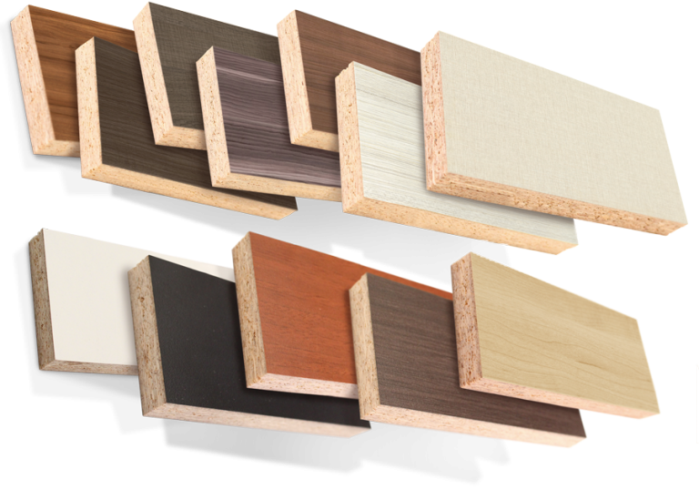
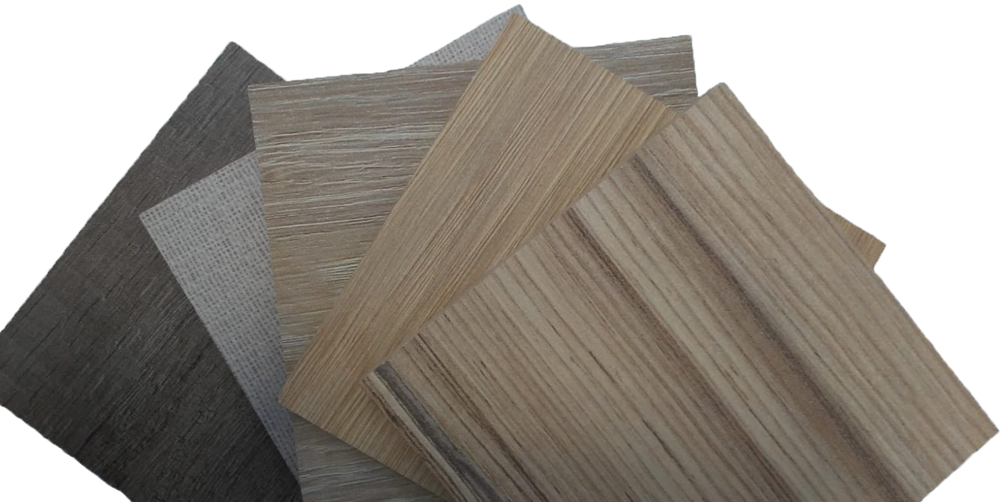

Materiales
Utilizamos melamina MDF, está hecho de fibra de madera comprimida la cual es triturada hasta que sea bastante pequeña para que el tablero sea más denso y uniforme, ademas gracias a la capa melaminica sobre le MDF, genera una buena resistencia a la humedad.

- Precios económicos y asequibles.
- Resistencia a la humedad, a las rayaduras, el sol, el fuego, y las altas temperaturas.
- Resistencia a detergentes y agentes químicos.
- Fortaleza contra parásitos o microorganismos como el moho.
- Su resistencia hace que se pueda usar en múltiples estancias, incluidas baño y cocina.
- Variedad de texturas y amplia gama de acabados estéticos: liso, rugoso, imitación de madera, mate, brillo, serigrafía…
- Acabados en estilo moderno y rústico.
- Fácil de limpiar y mantener.
Ventajas de la melamina

Al tratarse de un material sintético y sus tableros tienen una capa de resina, son mucho más fáciles de limpiar y difíciles de manchar, ya que son resistentes a disolventes y ácidos. En todo caso, se recomienda usar productos creados para el mantenimiento de este material. De esta manera alargarás aún más su vida útil.